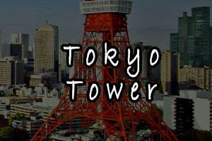
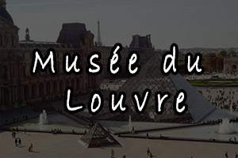
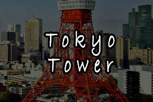
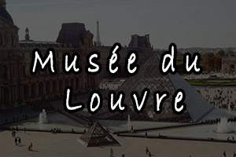

A voir également

 



La Tour de Tokyo est une tour japonaise de radiodiffusion, inaugurée en 1958 à l'image de la Tour Eiffel, dans l'arrondissement de Minato au sud de la capitale. Elle est l'une des plus hautes tour en métal du monde, avec un point culminant à 333 mètres et deux observatoires sur la ville. Reconnaissable à ses couleurs rouges et blanches, elle s'illumine la nuit selon les saisons et évènements.
La Tour de Tokyo est une tour japonaise de radiodiffusion, inaugur√©e en 1958 √† l'image de la Tour Eiffel, dans l'arrondissement de Minato au sud de la capitale. Elle est l'une des plus hautes tour en m√©tal du monde, avec un point culminant √† 333 m√®tres et deux observatoires sur la ville. Reconnaissable √† ses couleurs rouges et blanches, elle s'illumine la nuit selon les saisons et √©v√®nements.Avec l'inauguration de la Tokyo SkyTree en 2012, la Tokyo Tower üóº semble √™tre comme tomb√©e en d√©su√©tude pour de nombreux voyageurs. Or elle peut tout de m√™me rec√©ler un certain int√©r√™t sur lequel nous allons revenir.
On reconna√Æt la belle √† sa robe rouge caract√©ristique, stri√©e de bandes blanches. De nuit, les illuminations la mettent superbement en valeur. Au pied (80 m√®tres de c√¥t√©, tout de m√™me) un centre commercial baptis√© "Foot Town" accueille les visiteurs, ainsi que de nombreux restaurants et m√™me un aquarium. En mars 2015, la tour a accueilli le premier parc d'attractions üé° officiel One Piece, qui a attir√© 100.000 visiteurs dans ses 48 premiers jours d'ouverture.